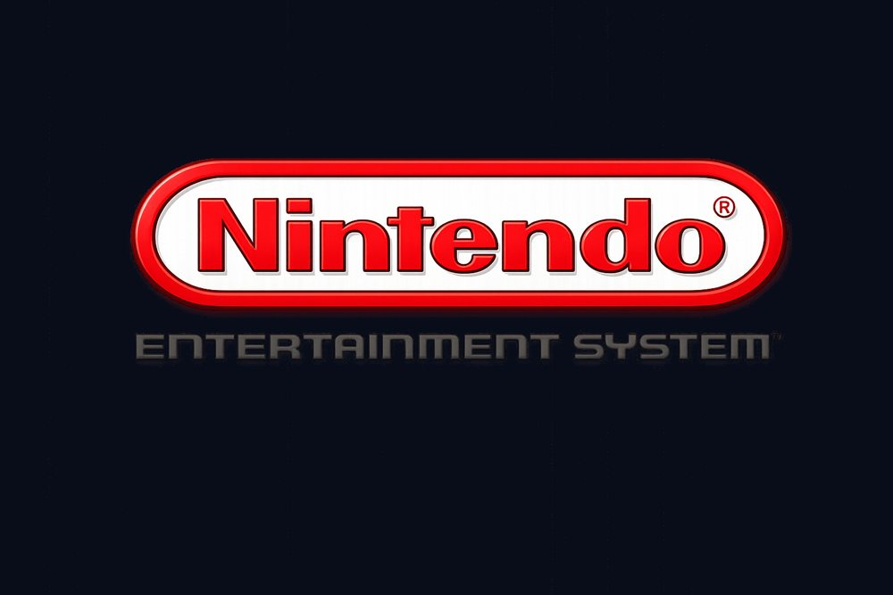
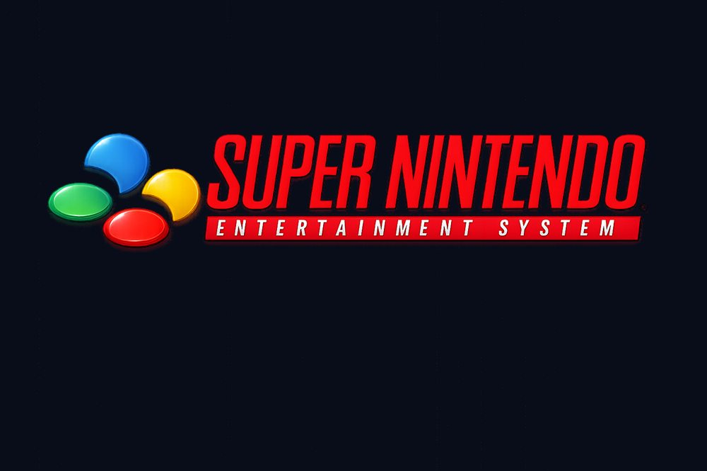
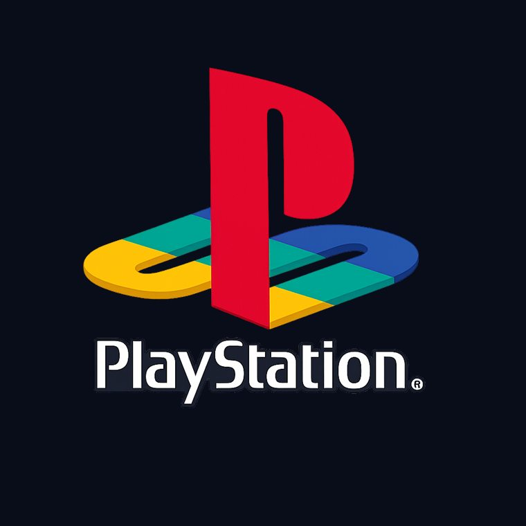
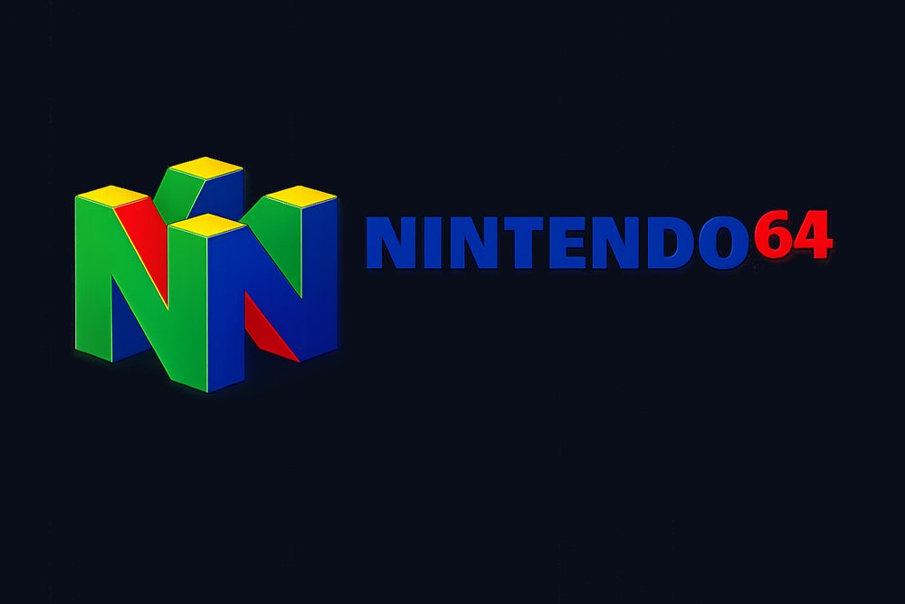
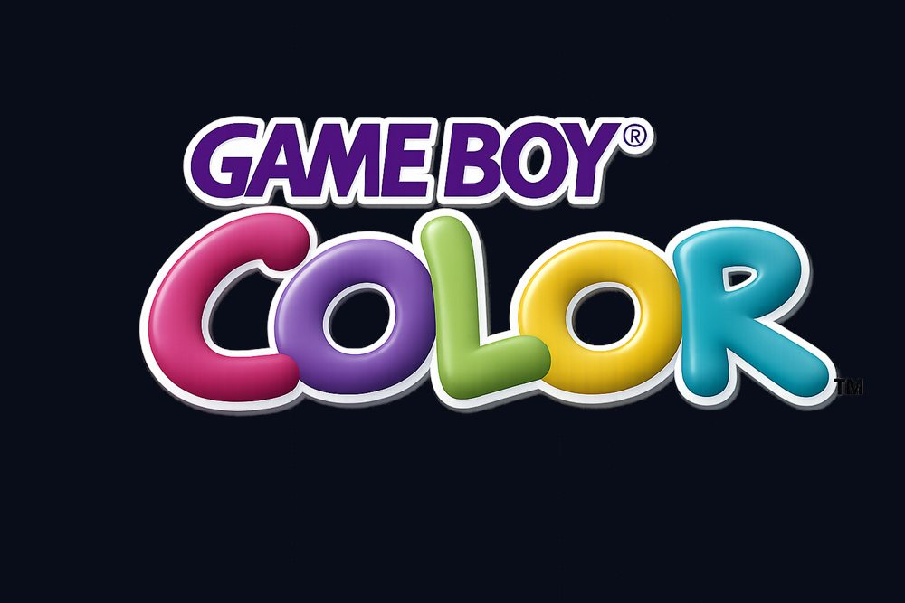
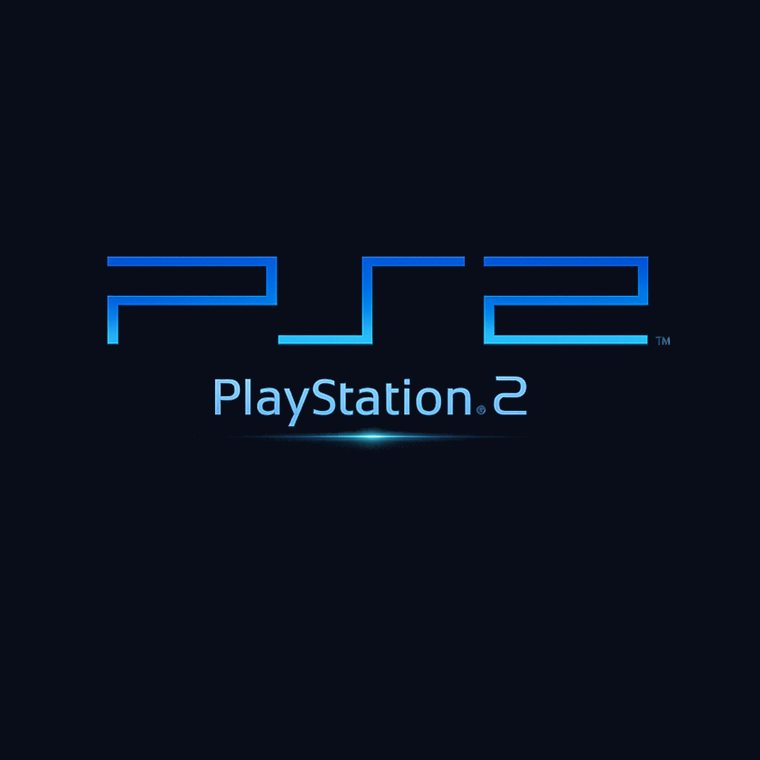
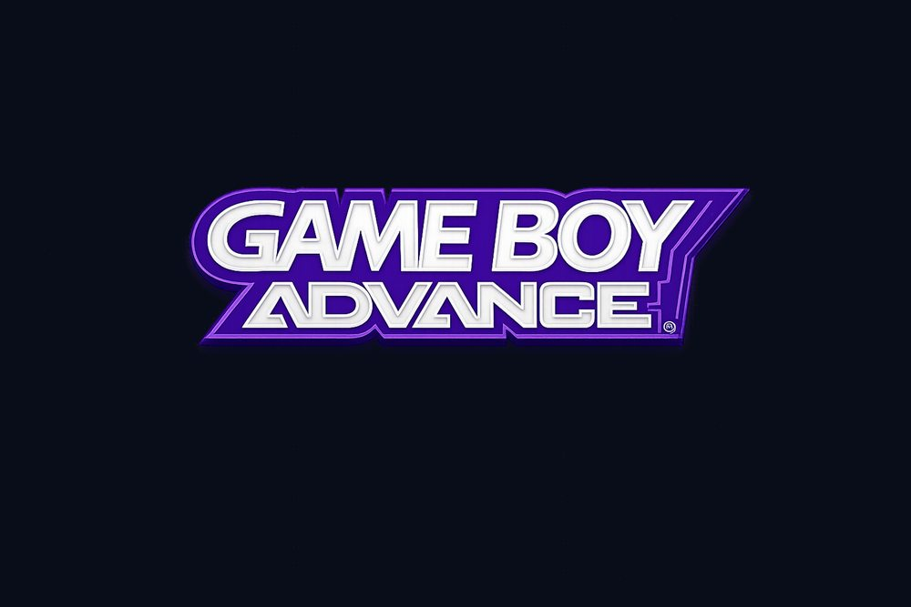

Nintendo Entertainment System (NES)
Nintendo - 1983
The machine that rebuilt trust in home gaming after the early-80s crash.
- IconSuper Mario Bros. 3
Explore classic consoles from the 80s, 90s, and early 2000s. Open each console page for specs, gameplay videos, and top games.
Hotkeys: / search and R random pick.
7 console dossiers loaded.
No console matched your filters. Try a different combo.

Nintendo - 1983
The machine that rebuilt trust in home gaming after the early-80s crash.

Nintendo - 1990
Precision platforming, legendary RPGs, and rich sound in one iconic box.

Sony - 1994
CD media and broad third-party support made 3D gaming mainstream.

Nintendo - 1996
Analog movement plus four-controller local sessions defined couch play.

Nintendo - 1998
A portable catalog machine with color support and massive daily-play appeal.

Sony - 2000
Huge game support plus DVD playback made it a living-room takeover unit.

Nintendo - 2001
Deep RPG and action lineup with hardware muscle for ambitious handheld design.
Major hardware milestones from the 80s, 90s, and early 2000s.
1983
Home console confidence returned.
1990
16-bit visuals and sound became iconic.
1994
CD media opened up larger games.
1996
Analog control changed 3D gameplay.
2000-2001
Living-room and handheld gaming exploded.